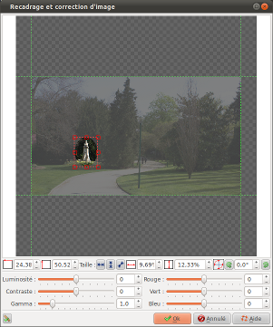

Introduction
La boite de recadrage et de
correction permet plusieurs choses :
- Recadrer l'image : C'est à dire n'en sélectionner
qu'une partie.
- Tourner l'image : C'est à dire en changer l'orientation
(portrait / paysage) ou la remettre de niveau.
- Corriger l'image : C'est à dire en changer les
paramètres de couleurs et/ou d'exposition.
Les réglages d'images sont
effectués plan par plan. Ainsi, chaque plan possède
ses propres réglages et le passage d'un plan à un
autre défini le passage d'un réglage à un autre
créant une animation de plan : c'est ce qu'on appel des
effets Ken Burns. En voici quelques uns :
- Zoom sur une portion de l'image
- Scrolling d'une portion de l'image à une autre
- Éclaircissement ou assombrissement d'une portion de
l'image
- etc...
Cette boite est appelée depuis deux autres boites de
dialogue lorsque vous cliquez sur le bouton

:
Description de la boite de dialogue
Le cadrage

|
Le cadrage d'une image
est définie par 4 valeurs :
- La position horizontal à partir de la gauche
(X). Cette position est exprimée en pourcentage
(%) de la largeur total de l'image.
Exemple : Si X=25% alors le 1er quart à gauche
de l'image est supprimé.
- La position vertical à partir du haut de
l'image (Y). Cette position est exprimée en
pourcentage (%) de la hauteur total de l'image.
Exemple : Si Y=25% alors le 1er quart en haut de
l'image est supprimé.
- Le niveau de zoom. Cette position est
exprimée en pourcentage (%) de la largeur total
de l'image.
Exemple : Si Zoom=33%, alors l'image recadrée
représentera 1/3 de l'image total.
- L'angle de rotation. Cette position est
exprimée en degré.
Exemple : Si rotation=90° alors l'image est
tournée d'un quart de tour vers la droite.
Vous pouvez utiliser les bouton + et - de chaque zone de
saisie pour effectuer les réglages, ou bien saisir
directement les valeurs pour les 4 paramètres.
Ou alors, vous pouvez utiliser la zone interactive pour
effectuer le recadrage à la souris. Vous pouvez :
- Cliquer sur l'une des poignées de l'image et,
tout en maintenant le bouton de la souris
enfoncé, déplacer la souris, permet de
modifier le niveau de zoom (augmenter ou
réduire la partie de l'image qui sera
conservée).
- Cliquer sur la zone d'image conservée et,
tout en maintenant le bouton de la souris
enfoncé, déplacer la souris, permet de
modifier la partie de l'image qui sera
conservée.
Note : Lorsque l'image ne correspond pas à la
géométrie de la vidéo à produire,
l'image est centrée et des zones transparentes
apparaissent. (Par exemple : Une image 4/3 utilisée
dans un projet en 16/9 sera par défaut
affichée avec une zone transparent de chaque
coté). |
Les boutons suivants aide au cadrage de l'image :

|
Active
ou désactive les règles magnétiques : Si
les règles sont activées, la souris sera
automatiquement attirée vers les bords de la photo,
facilitant le réglage du cadrage. |

|
Règle
automatique le cadrage sur la largeur de l'image. Si
l'image est trop haute pour entrer dans le cadre, les
parties hautes et basses seront coupées.
|
 |
Règle
automatique le cadrage sur la hauteur de l'image. Si
l'image est trop large pour entrer dans le cadre, les
parties droites et gauches seront coupées. |

|
Règle
automatique le cadrage sur la diagonale de l'image. Le
cadrage est réglé de tel sorte à ce que
l'image soit vue dans sont intégralité. |

|
Tourne
l'image vers la gauche (sur le prochain multiple de
90°).
|
 |
Tourne
l'image vers la droite (sur le prochain multiple de
90°). |
Les corrections d'images
Les corrections d'images permettent d'éclaircir ou
d'assombrir l'image aux travers des trois valeurs suivantes :
- Luminosité
- Contraste
- Gamma
Les corrections d'images permettent également de modifier
la colorisation d'une image en changeant la force des couleurs
primaires :
Par exemple :
- Rouge : Réduire la composante rouge fait jaunir
l'image - L'augmenter fait bleuir l'image
- Vert : Réduire la composante verte fait rougir
l'image - L'augmenter fait verdir l'image
- Bleu : Réduire la composante verte fait rougir
l'image - L'augmenter fait bleuir l'image
Toutes les combinaisons sont possibles. Par exemple : Augmenter
le rouge et réduire le vert en même temps.
Les résultats obtenus dépendront de l'image d'origine
et de la force initiale de chaque composante primaire.
Voir aussi
ffDiaporama 0.99.alpha2 -
Juin 2011